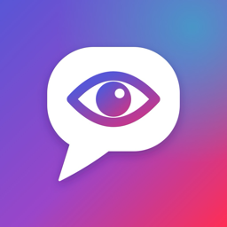

Gizlilik Politikası ve Aydınlatma Metni
Yürürlük tarihi: 23 Ekim 2026
Bu metin, SeeSay mobil uygulamasını (“SeeSay”, “uygulama”) kullandığında hangi kişisel verilerinin işlendiğini, bunların neden ve nasıl kullanıldığını, kimlerle paylaşıldığını ve 6698 sayılı Kişisel Verilerin Korunması Kanunu (KVKK) ile Avrupa Birliği Genel Veri Koruma Tüzüğü (GDPR) kapsamındaki haklarını açıklar.
Kısaca
- Ses kaydın bize gelmez. Konuşman telefonunun konuşma tanıma servisiyle (Apple ya da Google) yazıya çevrilir. Bize yalnızca bu yazı gelir.
- Yazıya dökülen konuşman yapay zekâ ile değerlendirilir. Sahne, görev ve geri bildirim hazırlamak için Anthropic’in Claude modeline gönderilir. Bunu yapmadan önce açık onayını alırız.
- Verilerini satmayız. Uygulamanın hizmeti için gereken servis sağlayıcılar dışında kimseyle paylaşmayız.
- Hesabını uygulamanın içinden silebilirsin. Ayarlar → Hesabımı sil. Bu işlem hesabını ve tüm öğrenme verilerini kalıcı olarak siler.
1. Veri sorumlusu
Veri sorumlusu, SeeSay’i geliştiren bireysel geliştirici Mahmutcan Sevin’dir (Türkiye). Bu politikayla ilgili her soru ve talep için: seesay.support@gmail.com.
2. Hangi verileri işliyoruz?
| Veri | Nereden gelir | Ne için |
|---|---|---|
| Hesap bilgileri: e-posta adresi, şifre (yalnızca şifrelenmiş özeti saklanır), istersen adın | Kayıt olurken senden | Hesabını açmak, giriş yapmanı ve şifreni sıfırlamanı sağlamak |
| Öğrenme profili: öğrendiğin dil ve aksan, seviyen (CEFR; İngilizcede tahmini IELTS bandı), öğrenme hedefin ve hedef notun, ilgi alanların, günlük hedefin | Senden, seviye testinden | Sahneleri, görevleri ve dersleri sana göre hazırlamak |
| Konuşma metinleri: pratik, seviye testi ve Yolda Konuş sırasında söylediklerinin yazıya dökülmüş hali, konuşma süresi ve dakikadaki kelime gibi ölçümler | Telefonundaki konuşma tanıma | Konuşmanı değerlendirmek, hatalarını ve gelişimini göstermek |
| Öğrenme kayıtları: sahneler, görevler, geri bildirimler, düzeltmeler, defterine kaydettiklerin, tekrar sonuçların, telaffuz puanların, beceri gelişimin ve günlük konuşma süren | Uygulamayı kullanman ve yapay zekâ değerlendirmesi | İlerlemeni göstermek, tekrar zamanlarını belirlemek, sonraki pratiği zayıf yanlarına göre seçmek |
| Bildirimlerin: uygunsuz ya da hatalı bulup bildirdiğin içerik ve notun | Senden | İçeriği incelemek, hizmeti iyileştirmek |
| Satın alma bilgileri: abonelik durumun, satın alma geçmişi ve işlem kimlikleri (kart bilgilerin bize gelmez) | App Store / Google Play ve RevenueCat | Premium’u açmak ve doğrulamak |
| Reklam verileri: ödüllü reklam izlediğinde reklam kimliği (izin verdiysen), IP adresi, cihaz bilgisi ve reklamın izlendiğine dair doğrulama | Google AdMob | Ek sahne ödülünü vermek, reklam göstermek ve ölçmek |
İşlemediklerimiz: Ses kaydını sunucularımıza göndermeyiz. Telaffuz çalışmalarında kaydettiğin ses yalnızca telefonunda, kendi sesini dinleyebilmen için geçici olarak tutulur. Konumunu, rehberini, fotoğraflarını ya da sağlık verilerini toplamayız. Uygulamada analitik ya da kullanıcı takibi yapan bir araç kullanmayız.
3. Yapay zekâ ile değerlendirme
SeeSay’in temel işlevi, konuşmanı yapay zekâ ile değerlendirmektir. Uygulamayı kullanmaya başlamadan önce bu aktarım için açık onayını alırız. Onay vermezsen pratik yapılamaz.
- Anthropic (Claude): Konuşmanın yazısı ve değerlendirme için gereken bağlam gönderilir: seviyen, öğrendiğin dil, hedefin, ilgi alanların, çalışman gereken beceriler ve deftere kaydettiğin ifadeler. Anthropic, ticari API üzerinden gelen verileri modellerini eğitmek için kullanmaz. Verileri, kötüye kullanımı önlemek amacıyla kendi koşullarındaki sınırlı süre boyunca saklayabilir.
- fal.ai: Sahne resimleri yalnızca sahnenin İngilizce tarifinden çizilir. Bu tarif hakkında kişisel bilgi içermez.
Yapay zekâ hata yapabilir. Geri bildirimler eğitim amaçlıdır. Seviye ve IELTS tahminleri resmî sınav sonucu değildir.
4. Verileri kimlerle paylaşıyoruz?
Verilerini yalnızca hizmeti sunmak için çalıştığımız aşağıdaki servis sağlayıcılarla, gereken ölçüde paylaşırız. Bu sağlayıcılar verileri bizim adımıza ve kendi gizlilik koşullarına göre işler:
| Sağlayıcı | Görevi | Paylaşılan veri |
|---|---|---|
| Supabase Inc. | Veritabanı, kimlik doğrulama, dosya depolama ve sunucu işlevleri | Bu metindeki tüm uygulama verileri |
| Anthropic PBC | Yapay zekâ ile sahne hazırlama ve değerlendirme | Konuşma metinleri ve değerlendirme bağlamı (bkz. 3. bölüm) |
| fal.ai (Features & Labels Inc.) | Sahne resmi üretimi | Kişisel bilgi içermeyen sahne tarifi |
| RevenueCat Inc. | Abonelik yönetimi | Uygulama içi kullanıcı kimliği, satın alma bilgileri |
| Google LLC (AdMob) | Ödüllü reklamlar | Reklam kimliği, IP adresi, cihaz bilgisi, reklam etkileşimi |
| Apple Inc. / Google LLC | Konuşma tanıma, uygulama mağazası ve ödeme | Konuşma sesi, cihazın tanıma servisine göre telefonda ya da Apple/Google sunucularında işlenir. Ödemeler mağaza hesabın üzerinden yapılır. |
Yasal bir zorunluluk olduğunda ya da yetkili makamların hukuka uygun talebi üzerine de veri paylaşabiliriz.
5. Yurt dışına aktarım
Yukarıdaki servis sağlayıcıların sunucuları Türkiye dışındadır (ağırlıklı olarak ABD ve AB). Kişisel verilerin, KVKK’nın 9. maddesinde öngörülen güvencelere uygun olarak yurt dışına aktarılır. Bu güvenceler, standart sözleşmeler ile hizmetin sunulması için zorunlu aktarımlardır. Yapay zekâ değerlendirmesi için aktarımdan önce ayrıca açık onayını alırız.
6. Hukuki sebepler
- Sözleşmenin kurulması ve ifası: Hesabını açmak, öğrenme hizmetini ve aboneliği sunmak (KVKK m. 5/2-c; GDPR m. 6/1-b).
- Açık rıza: Konuşma metinlerinin yapay zekâ ile değerlendirilmek üzere yurt dışındaki sağlayıcıya aktarılması, kişiselleştirilmiş reklam ve iOS’ta uygulamalar arası izleme izni (KVKK m. 5/1 ve 9; GDPR m. 6/1-a).
- Meşru menfaat: Hizmetin güvenliği, kötüye kullanımın önlenmesi, bildirilen içeriğin incelenmesi (KVKK m. 5/2-f; GDPR m. 6/1-f).
- Hukuki yükümlülük: Mevzuatın gerektirdiği kayıtlar (KVKK m. 5/2-ç; GDPR m. 6/1-c).
7. Reklamlar ve izleme
Ücretsiz planda, isteğe bağlı olarak kısa bir reklam izleyip ek sahne açabilirsin. Reklamlar Google AdMob tarafından gösterilir. Avrupa Ekonomik Alanı ve Birleşik Krallık’ta reklam göstermeden önce Google’ın onay ekranıyla izin isteriz. iOS’ta, kişiselleştirilmiş reklam için uygulamalar arası izleme iznini ancak ilk reklamdan önce sorarız. İzin vermesen de reklamları izleyebilirsin; o zaman reklamlar kişiselleştirilmez. Premium üyeler bu izinlerle karşılaşmaz. Reklam tercihlerini Ayarlar → “Reklam gizlilik seçenekleri” bölümünden değiştirebilirsin (bu seçenek bulunduğun bölgede gerekliyse görünür).
8. Saklama süresi
Verilerini hesabın açık olduğu sürece saklarız. Hesabını sildiğinde hesap bilgilerin, öğrenme profilin, konuşma metinlerin, geri bildirimlerin, defterin, sahne resimlerin ve abonelik kaydın (RevenueCat) silinir. Silinen veriler, teknik yedeklerden olağan yedekleme döngüsü içinde kalıcı olarak kaldırılır. Mağaza ödemelerine ilişkin kayıtlar, Apple ve Google tarafından kendi yasal yükümlülüklerine göre saklanır.
9. Hesap ve veri silme
Uygulamada Ayarlar → Hesabımı sil adımıyla hesabını ve verilerini anında silebilirsin. Uygulamaya erişemiyorsan hesap silme sayfasındaki adımları izle. Hesabı silmek mağaza aboneliğini iptal etmez. Aboneliğini App Store ya da Google Play hesabından ayrıca iptal etmelisin.
10. Güvenlik
Veriler aktarım sırasında şifrelenir (TLS). Veritabanında her kullanıcı yalnızca kendi kayıtlarını okuyabilir. Yapay zekâ işlemleri ve ödeme doğrulaması yalnızca sunucu tarafında, gizli anahtarlarla yapılır. Hiçbir sistem tamamen güvenli değildir. Bir veri ihlali olursa mevzuatın öngördüğü şekilde seni ve ilgili makamları bilgilendiririz.
11. Çocuklar
SeeSay 13 yaşından küçük çocuklara yönelik değildir ve onlardan bilerek veri toplamaz. 18 yaşından küçüksen uygulamayı ebeveyninin ya da vasinin izniyle kullanmalısın. 13 yaşından küçük bir çocuğun veri paylaştığını fark edersen bize yaz; bu verileri sileriz.
12. Hakların
KVKK’nın 11. maddesi ve GDPR uyarınca şu haklara sahipsin:
- Verilerinin işlenip işlenmediğini öğrenmek ve işleniyorsa bilgi istemek
- İşleme amacını ve amaca uygun kullanılıp kullanılmadığını öğrenmek
- Verilerinin aktarıldığı üçüncü kişileri öğrenmek
- Eksik ya da yanlış verilerin düzeltilmesini, verilerinin silinmesini ya da yok edilmesini istemek
- Düzeltme ve silme işlemlerinin aktarıldığı kişilere bildirilmesini istemek
- Otomatik sistemlerle analiz edilmesi sonucu aleyhine bir sonuç çıkmasına itiraz etmek
- Kanuna aykırı işleme nedeniyle zarara uğrarsan zararın giderilmesini istemek
- Verilerinin taşınmasını istemek ve açık rızanı geri almak (geri alma, önceki işlemleri etkilemez)
Taleplerini seesay.support@gmail.com adresine, hesabının e-posta adresinden yazarak iletebilirsin. En geç 30 gün içinde yanıt veririz. Kişisel Verileri Koruma Kurulu’na ya da bulunduğun ülkenin veri koruma otoritesine şikâyette bulunma hakkın da vardır.
13. Değişiklikler
Bu politikayı güncelleyebiliriz. Önemli değişiklikleri uygulama içinden duyururuz. Güncel metin her zaman bu adreste yayımlanır.